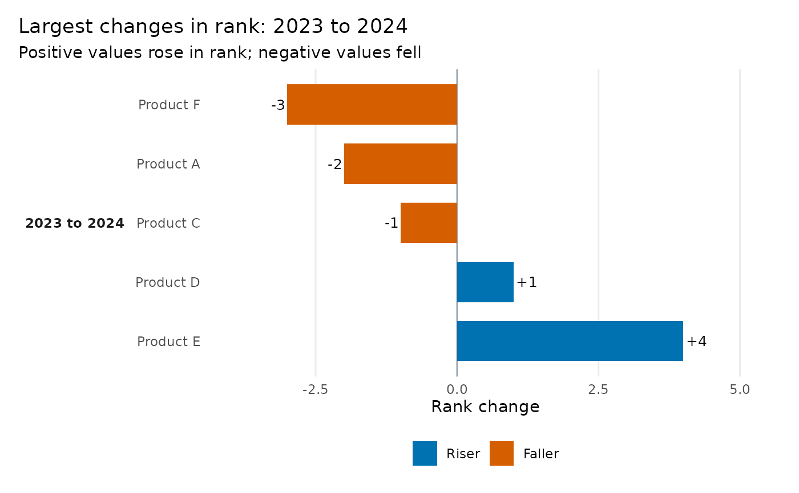
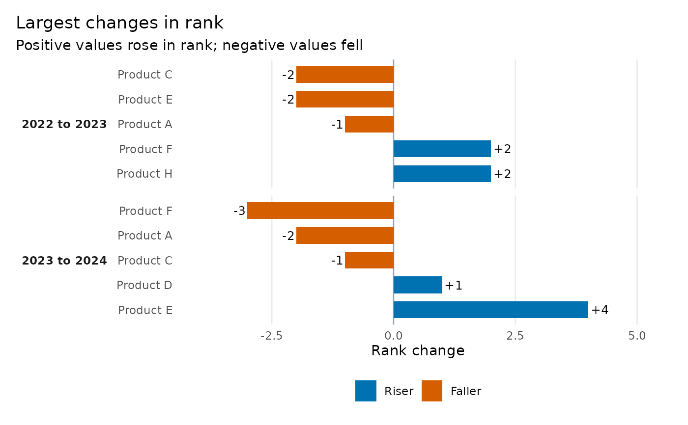

Creates a diverging bar chart answering "Who moved the most?" Positive
values rose towards rank one; negative values fell away from rank one. Raw
data are processed by ggrank_table(), preserving one ranking engine.
Usage
ggrank_change(
data,
category = NULL,
period = NULL,
value = NULL,
rank = NULL,
label = NULL,
group = NULL,
periods = NULL,
top = 15,
top_n = 10,
direction = c("descending", "ascending"),
ties = c("min", "dense", "first"),
check_rank = TRUE,
comparison = c("latest", "all"),
from = NULL,
to = NULL,
show_stable = FALSE,
change_label = c("change", "ranks", "none"),
label_wrap = 30,
palette = c(riser = "#0072B2", faller = "#D55E00", stable = "#667085"),
legend_title = NULL,
legend_labels = NULL,
show_legend = TRUE,
base_size = 11,
title = NULL,
subtitle = NULL
)Arguments
- data
Raw data or a rank-change table returned by
ggrank_table().- category, period, value
Unquoted columns used with raw
data.- rank, label, group
Optional unquoted columns used with raw
data.- periods
Optional vector selecting and ordering two to four periods.
- top
Maximum categories displayed per comparison, selected by
abs(rank_change). This is nottoprisers plustopfallers.- top_n
Top-rank boundary used to classify entrants and exits with raw data. It does not control the number of bars;
topdoes.- direction, ties, check_rank
Ranking options passed to
ggrank_table().- comparison
Display the latest consecutive comparison (default) or all comparisons. Ignored when
fromandtoare supplied.- from, to
Optional explicit comparison. Both must be supplied and the pair must already exist in the rank-change table.
- show_stable
Include unchanged categories. The default excludes them.
- change_label
Show signed change (
"change"), detailed ranks such as"7 -> 3 (+4)"("ranks"), or no bar-end label ("none").- label_wrap
Approximate characters per category-label line.
- palette
Named colours for
riser,faller, andstable.- legend_title
Optional legend title.
- legend_labels
Optional named labels for displayed movements.
- show_legend
Show the movement legend.
- base_size
Base text size.
- title, subtitle
Optional text overriding informative defaults. Use
subtitle = ""to suppress the default subtitle.
Examples
ggrank_change(ggrank_products, product, year, sales, top = 5)

changes <- ggrank_table(
ggrank_products, product, year, sales,
top_n = 5, show_transitions = "all"
)
ggrank_change(changes, top = 5, comparison = "all")
